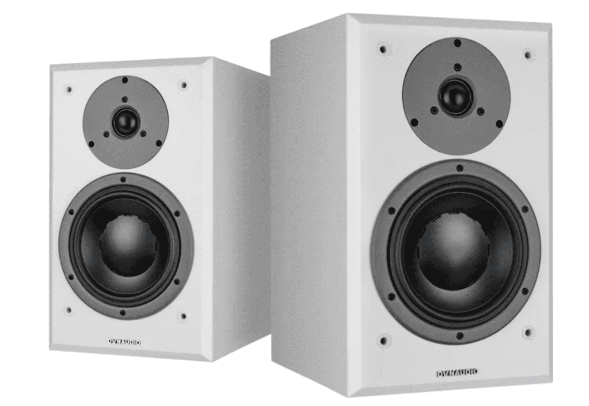
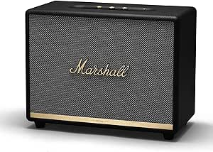
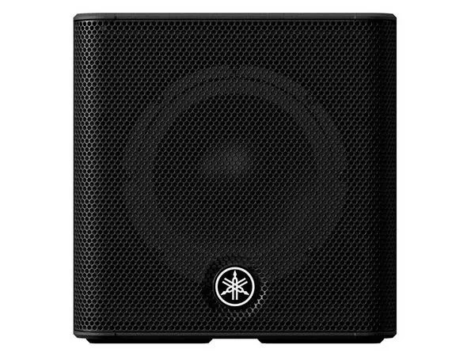

Gli altoparlanti Bluetooth HD6
sono i migliori altoparlanti
da utilizzare
per monitor da gioco,
impianti stereo
domestici e altro ancora.
Grazie alla connettività Bluetooth ad ampio raggio,
questi diffusori amplificati possono connettersi
rapidamente e senza problemi a telefoni,
tablet o computer fino a 30 metri
di distanza per una connettività completa.
PREZZO :780€
MARCA : AUDIOENGINE
MODELLO: HD6

Questo diffusore unisce tecnologia contemporanea e caratteristico design Marshall per offrire un suono potente, mantenendo un look classico
Ottimizza la tua musica secondo le tue preferenze con l’app Marshall Bluetooth o i controlli analogici sul pannello superiore del tuo diffusore
Usa l’ingresso da 3,5 mm o RCA se preferisci un’esperienza di ascolto analogica
PREZZO :502€
MARCA : MARSHALL
MODELLO: WOBUM

Stagepas 200BTR è un sistema PA portatile premium
che offre prestazioni ben al di sopra della sua classe
di peso. Con un funzionamento rapido e intuitivo di
funzioni audio dal vivo cruciali e prestazioni
complessive superbe, il tuo pubblico sarà sbalordito
dal tuo suono e probabilmente perplesso dalla tua
minuscola configurazione.
Caratterizzato da un design del trasduttore coassiale
di alta qualità, Stagepas 200BTR è in grado di fornire
la migliore pressione sonora della categoria
PREZZO :779€
MARCA : YAMAHA
MODELLO: STAGEPAS 200BR